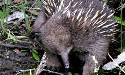

The forecast for Saturday indicates rain. Please check the #DFBBQ hashtag on Twitter for changes of plan if the weather looks bad.
The forecast for Saturday indicates rain. Please check the #DFBBQ hashtag on Twitter for changes of plan if the weather looks bad.
What
We're coming together for a Double Fine fan BBQ/meetup at PAX Australia, but not at PAX Australia.
Hang out with other local Double Fine fans and meet special guest Ron Gilbert!
Where
Victory Park - just across the road from the PAX Australia venue at the Melbourne Showgrounds (bigger map)!
Situated on Langs Road in Ascot Vale, Victory Park has play equipment, BBQ facilities and open space for pirates, psychic agents, metal heads and spelunkers alike.


Trains and trams to the Melbourne Showgrounds will be running across the weekend - check this site for more details on public transport and getting there.
Since this is outside of the PAX Australia venue, attendees will need to ensure that they have their passes and photo ID so that they can get back in!
When

Keep an eye to the countdown timer at the top of the page, make a reminder, set an alarm, write it on your forehead so you don't forget!
12:30pm on Saturday the 20th of July 2013!
For PAX Australia attendees, details of the PAX Australia events which might conflict with the Double Fine Down Under BBQ can be found on the PAX schedule for Saturday.
Woo?
If you're interested in having something to munch, bring your own food. Since Victory Park is a public space, we won't be able to reserve or monopolise BBQ equipment, but if it's doable, we'll try to keep one meat-free.
You can see a list of potential activities and suggest your own/say hi in this thread on the Double Fine forums.
We'll also have some giveaways of sweet Double Fine gear including stickers, patches and games (in the form of Humble Bundle gift codes)!
Why
It's not often that an international pop culture/gaming event happens in Australia that brings people together the way that PAX will. This is a great time for fans and communities to come together to meet new friends and celebrate the things they love.
With Double Fine not able to attend, setting a time and place to gather is the best way to bring local DF fans and PAX attendees from afar together.
PAX Australia sold out very quickly, and there have been many people interested in a meetup who weren't able to get passes. Having something across the road from the showgrounds makes it accessible to those that missed out whilst still keeping it easy for PAX attendees to get to without missing out on PAX content due to travel time.
Who

This gathering has been coordinated by Australian Double Fine community members. People from DF (most notably Greg and Ron whilst he was still there) have been really supportive and even donated some gear to give away.
If you come along, you'll get to meet:
- Ron Gilbert - PAX Australia keynote speaker, former Double Fine team member and creator of Maniac Mansion, Monkey Island, DeathSpank and The Cave (amongst others)!
- Cheese - that fellow who coordinates the Double Fine Game Club, keep an eye out for his antennae!
- Less wildlife than images on this page seem to suggest!
- And a whole bunch of super awesome Aussie DF fans!